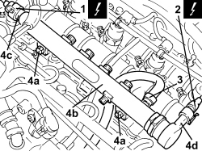
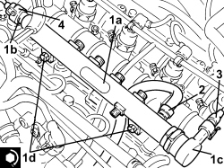
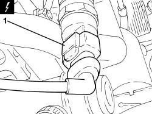
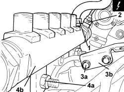
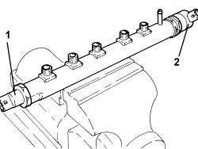

1060F30 SINGLE FUEL MANIFOLD PIPE - R.R.
- Path
- Procedures > 10 ENGINE > 1060 DIESEL INJECTION SYSTEM > 1060F INJECTORS AND PIPES > 1060F30 SINGLE FUEL MANIFOLD PIPE - R.R.
- Kind
- repair procedure (removal / refitting; the operation number is the code)
- Applies to
- engines: 1.9 JTD 8v, 1.9 JTD 16v, 2.4 JTD 20v; all production periods
- Interactive page
- https://sloeber94.github.io/elrnDB-fCrm/en/#/194000330
Applies to: engines: 1.9 JTD 16v, 2.4 JTD 20v; all production periods
 Removing
Removing
 Refitting
Refitting- Make sure that the ignition key is in the OFF position, then disconnect the battery terminal (-).
Description | Connector | |
|---|---|---|
- | Battery |
Op. 1016A10 SOUND-PROOFING COVER - R.R
Op. 1060F20 PIPE FROM PRESSURE PUMP TO FUEL MANIFOLD - R.R.
Op. 1060F36 PIPES (ALL) FROM FUEL MANIFOLD TO INJECTOR - R.R.
1. Disconnect the electrical connection from the fuel pressure sensor.
Description | Connector | |
|---|---|---|
1 | Fuel pressure sensor |
2. Disconnect the electrical connection from the fuel pressure regulator on the injector single manifold.
Description | Connector | |
|---|---|---|
2 | Fuel pressure regulator on rail |
3. Loosen the band and disconnect the fuel return pipe from the single fuel manifold pipe to the fuel return manifold, single fuel manifold pipe side.
4. Undo the bolts (4a) and remove the single fuel manifold pipe (4b) complete with fuel pressure sensor (4c) and fuel pressure regulator (4d).

Applies to: engines: 1.9 JTD 16v, 2.4 JTD 20v; all production periods
Refitting
Removing1. Fit the single fuel manifold pipe (1a) complete with fuel pressure sensor (1b) and fuel pressure regulator (1c), then secure it tightening the bolts (1d) to the recommended torque.
Component | Fastening | dia | Value (daNm) | Validity |
|---|---|---|---|---|
Single fuel manifold pipe (rail) | Bolt | M8 | (cylinder head extension side) 2.3 - 2.8 | 1.9 JTD 16v 2.4 JTD 20v |
2. Connect the fuel return pipe from the single fuel manifold pipe to the fuel return manifold, single fuel manifold pipe side and tighten the band.
3. Connect the electrical connection to the fuel pressure regulator on the injector single manifold.
4. Connect the electrical connection to the fuel pressure sensor.

Applies to: engines: 1.9 JTD 16v, 2.4 JTD 20v; all production periods
Op. 1060F36 PIPES (ALL) FROM FUEL MANIFOLD TO INJECTOR - R.R.
Op. 1060F20 PIPE FROM PRESSURE PUMP TO FUEL MANIFOLD - R.R.
Op. 1016A10 SOUND-PROOFING COVER - R.R
- Connect the negative battery terminal.
Applies to: engines: 1.9 JTD 8v; all production periods
Removing
RefittingOp. 5530B52 BATTERY SUPPORT/DRIP TRAY - R.R
Op. 1048B27 RIGID PIPE FOR AIR INLET TO THROTTLE BODY - R R
Op. 1060G50 THROTTLE BODY - R.R
Op. 1080C24 E.G.R. SYSTEM SOLENOID - R + R
Op. 1060F36 PIPES (ALL) FROM FUEL MANIFOLD TO INJECTOR - R.R.
Op. 1060F20 PIPE FROM PRESSURE PUMP TO FUEL MANIFOLD - R.R.
1. Disconnect the electrical connection from the fuel pressure sensor.
Description | Connector | |
|---|---|---|
1 | Fuel pressure sensor |

Applies to: engines: 1.9 JTD 8v; all production periods
1. Loosen the band and disconnect the fuel return pipe, single fuel manifold pipe side.
2. Disconnect the electrical connection for the fuel pressure regulator.
Description | Connector | |
|---|---|---|
2 | Fuel pressure regulator on rail |
3. Undo the bolts (3a) and move the bracket (3b) aside.
4. Undo the nuts (4a) and remove the single fuel manifold pipe assembly (4b).

Applies to: engines: 1.9 JTD 8v; all production periods
- Position the single fuel manifold pipe in a vice fitted with protective jaws.
1. Undo the fuel pressure sensor and remove it.
2. Undo the fuel pressure regulator and remove it.

Applies to: engines: 1.9 JTD 8v; all production periods
Refitting
Removing- Place the fuel pressure regulator in its housing on the single fuel manifold pipe and tighten it to the recommended torque.
Component | Fastening | dia | Value (daNm) | Validity |
|---|---|---|---|---|
Fuel pressure regulator | - | - | (fuel manifold side) 8.0 - 9.0 | 1.9 JTD 8v |
- Place the fuel pressure sensor in its housing on the single fuel manifold pipe and tighten it to the recommended torque.
Component | Fastening | dia | Value (daNm) | Validity |
|---|---|---|---|---|
Fuel pressure sensor | - | - | (fuel manifold side) 6.5 - 7.5 | 1.9 JTD 8v |
- Remove the single fuel manifold pipe from the vice.
- Place the single fuel manifold pipe in its housing and secure it by tightening the nuts to the recommended torque.
Component | Fastening | dia | Value (daNm) | Validity |
|---|---|---|---|---|
Single fuel manifold pipe (rail) | Nut | M8 | (intake manifold side) 2.3 - 2.8 | 1.9 JTD 8v |
- Fit the bracket in its housing and secure it using the bolts.
- Connect the electrical connection to the fuel pressure regulator.
- Connect the fuel return pipe, single fuel manifold pipe side and tighten the band.
- Connect the electrical connection to the fuel pressure sensor.
Op. 1060F20 PIPE FROM PRESSURE PUMP TO FUEL MANIFOLD - R.R.
Op. 1060F36 PIPES (ALL) FROM FUEL MANIFOLD TO INJECTOR - R.R.
Op. 1080C24 E.G.R. SYSTEM SOLENOID - R + R
Op. 1060G50 THROTTLE BODY - R.R
Op. 1048B27 RIGID PIPE FOR AIR INLET TO THROTTLE BODY - R R
Topics linked from this page (11)
- 1016A10 SOUND-PROOFING COVER - R.R
- 1048B27 RIGID PIPE FOR AIR INLET TO THROTTLE BODY - R R
- 1060F20 PIPE FROM PRESSURE PUMP TO FUEL MANIFOLD - R.R.
- 1060F36 PIPES (ALL) FROM FUEL MANIFOLD TO INJECTOR - R.R.
- 1060G50 THROTTLE BODY - R.R
- 1080C24 E.G.R. SYSTEM SOLENOID - R + R
- 5530B10 BATTERY - R+R
- 5530B52 BATTERY SUPPORT/DRIP TRAY - R.R
- A001 BATTERY
- K083 FUEL PRESSURE SENSOR
- N087 FUEL PRESSURE REGULATOR ON RAIL